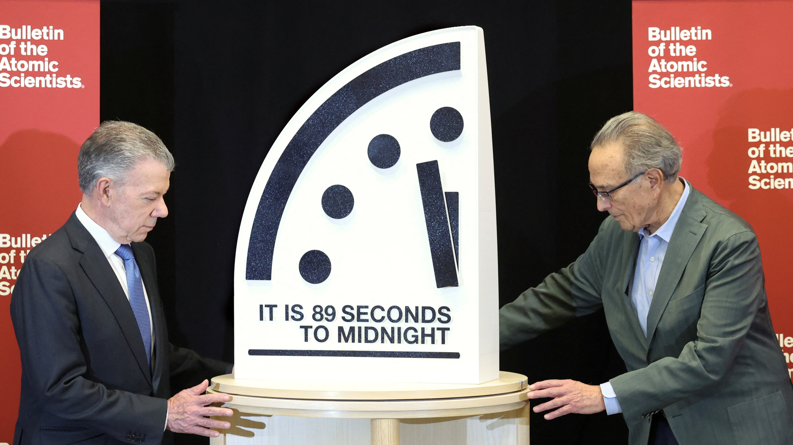

Science & Society
The Doomsday Clock: 89 Seconds to Midnight
The Bulletin of the Atomic Scientists has kept the Doomsday Clock at 89 seconds to midnight, the closest point to global annihilation ever reached, pointing to climate and nuclear risks.
July 2026 • 5 min read